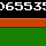

A:\FLIFLIXX>FLIFLIXX.DOC
コマンドまたはファイル名が違います
-----------------------------------------
minimini game series mogler?????
FLIFLIXX
(c)2005 ◆nemu90kWw.
FLIFLIXXは大きく分けて2つのバージョンがあるため、アーカイブ化にあたり両方収録しています。
2005年公開当時のOLD版と、高フレームレート化したNEW版は、内容的にはほぼ同じものです。
基本的にNEW版のほうが快適に遊べます。
また、NEW版のみクリア後のPRACTICEでおまけステージが遊べるようになっています。
マウスカーソルに寄ってくるエビフライをmoglerにぶつけよう。
クリックでエレガントに加速。
壁に触れてしまうとエレガントな爆発とともにタイムを減らされてしまうので注意。
全３２面。タイムアップまでにクリアしよう。
・BGMの種類について
ORIGINAL - PC-98時代のBGMLIB超高速分散BEEP疑似和音の音楽を再生します。
FAMICOM - ファミコンアレンジを施した音楽を再生します。
デスクトップ版ではFlash AIRの仕様により、OLD版の画質設定は効果がありません。
再描画領域の表示オプションは、描画方法の違いによりOLD版でのみ機能します。
|
エビFly |
エビフライである。誰がどう見てもエビフライである。 もしエビフライに見えないというのなら、催眠術で何とかしてほしい。 |
|
mogler |
もぐらである。誰がどう見てももぐらである。 もしもぐらに見えないというのなら、strangeloveで何とかしてほしい。 |
|
壁 |
壁である。誰がどう見ても壁である。 もし壁に見えなかったとしても、俺はお前を信じてる。 |
|
数字  |
数字である。誰がどう見ても数字である。
もし万が一数字に見えなかったとしても、 |
・・・う～ん。
フォントには、まくた氏のたれフォントを使用しました。
.bgm形式の曲ファイル再生にはJ.H.氏のELMBを使用しました。
.nsfファイル作成にはROPHON氏のMCK-Watchを使用しました。
また、再生にはGIGO氏のG-NSFを使用しました。
元ネタである「FLIXX」を製作したBio_100%のmetys氏、
および曲を手がけたfin氏、CLAUDE氏、NEW氏、
楽しい思い出をありがとうございました。